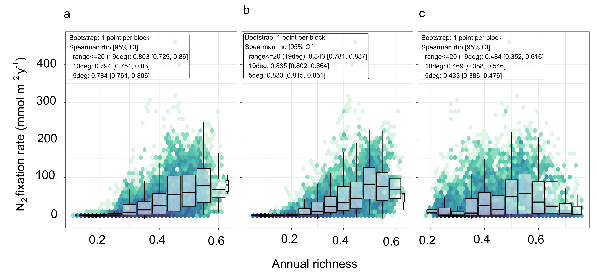
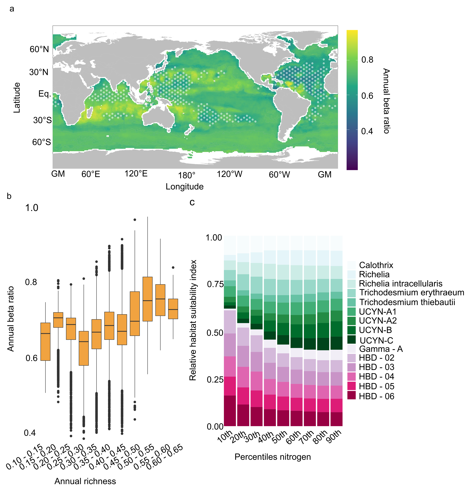

Scientific Legend: Maps show the ensemble mean annual diazotroph richness calculated as the average across 12 months for each grid cell using the 90 ensemble member models, at a 1° longitude by 1° latitude resolution for a total (n = 15), c cyanobacterial (n = 9) and e non-cyanobacterial (n = 6) diazotrophs. White stipples indicate areas where the coefficient of variation is above the 70th percentile, marking greater differences between model projections. Line plots show the latitudinal richness mean gradients across 90 ensemble members for b total, d cyanobacterial and f non-cyanobacterial diazotrophs indicating +/- 1 standard deviation across the 90 member models per degree latitude. The colored lines are the mean latitudinal gradients across all 90 ensemble members for each corresponding diazotrophic community.
Key Figure Empirical Takeaway: Demonstrates a strong latitudinal gradient in diazotroph richness with a distinct equatorial dip driven by Pacific upwelling, revealing divergent distribution patterns between cyanobacterial and non-cyanobacterial groups.
Key Figure Empirical Takeaway: Demonstrates a strong latitudinal gradient in diazotroph richness with a distinct equatorial dip driven by Pacific upwelling, revealing divergent distribution patterns between cyanobacterial and non-cyanobacterial groups.
Figure 1

Figure 2
Figure 3